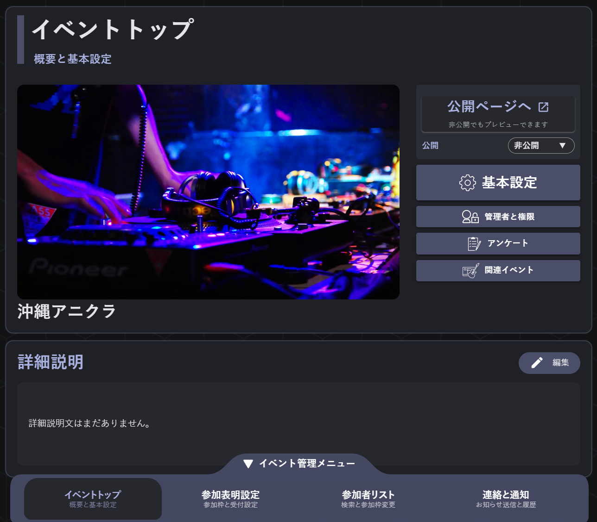
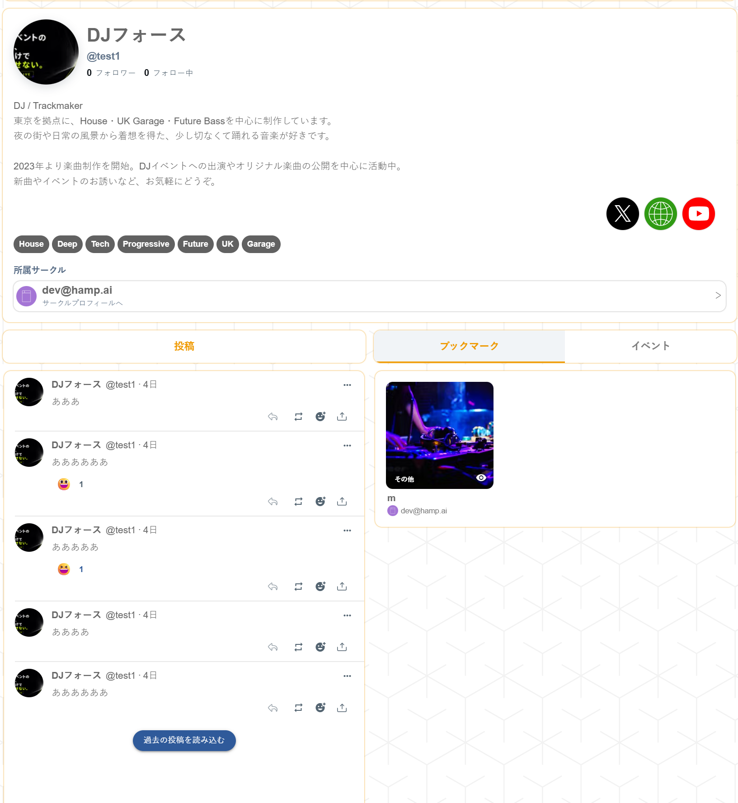
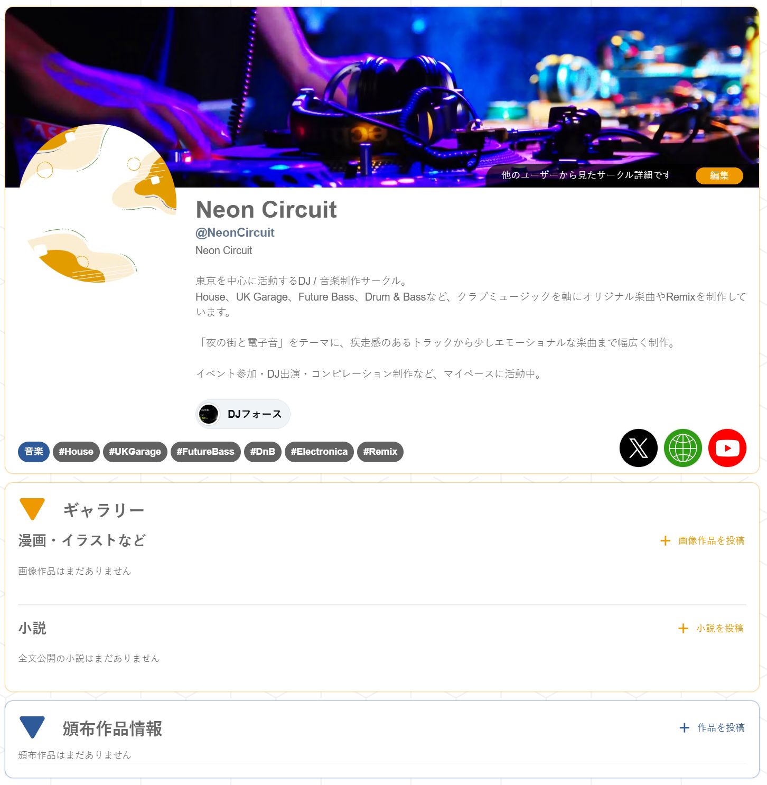
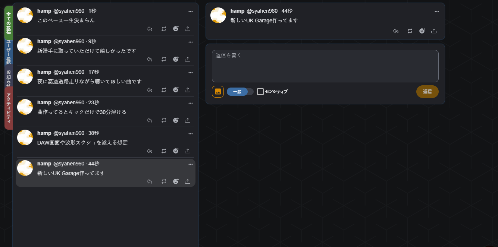

参加表明はここ、
連絡はDM
誰に何を伝えたか。開催が近づくほど、DMをさかのぼる時間が増えていく。
参加者へまとめて連絡01 / こんなときに
誰に何を伝えたか。開催が近づくほど、DMをさかのぼる時間が増えていく。
参加者へまとめて連絡出演枠だけ締めたい。ゲストだけ招待したい。本文の注意書きだけでは管理しきれない。
枠ごとに定員・招待を設定名簿や連絡先を共有できず、ページ更新や問い合わせ対応を分担しにくい。
必要な権限だけ渡して分担02 / まずはここから
イベントページ
フライヤー、出演者、タイムテーブル、会場案内、注意事項。必要な情報を一枚のページにまとめられます。
参加受付
イベントページから参加、変更、キャンセル。満員や受付終了もその場で分かります。
ログイン
XかGoogleでログイン。Xアカウントを持っていない出演者や参加者も、自分で登録できます。
03 / 募集と運営
誰を何人募集するか。誰に招待を送るか。どのスタッフが連絡するか。 イベントごとのやり方に合わせて設定できます。
最大30の参加枠を作り、枠ごとに説明、定員、無制限、招待制を設定。 DJ枠が埋まっても、来場者枠の募集はそのまま続けられます。

招待枠のURLを発行。誰が受け取ったか、参加したかを一覧で確認できます。
参加者全員、または参加枠ごとに、アプリ内・メール・プッシュ通知で一斉連絡できます。
参加時に確認済みメールアドレスの登録を必須化。閲覧できる運営権限も分けられます。
イベント全体の受付締切日時を設定。現在の参加数に合わせ、必要な枠だけを締める操作もできます。
選択式、自由記述、評価式に対応。回答期限や匿名回答、参加枠別の集計も設定できます。
スタッフを招待し、編集・閲覧・個人情報・参加者管理・通知送信などの権限を分担できます。
イベント告知も参加者の投稿もhamp内に。画像、返信、メンション、ハッシュタグにも対応します。
当日までの流れ
募集、招待、連絡。イベント後は出演者のプロフィールや作品も、同じアカウントから見てもらえます。
04 / 終演後も
出演者本人のプロフィール、グループ（サークル）ページ、作品情報をhampに。 来場者が気になったアーティストを知り、イベント後も投稿や作品へたどれる導線をつくります。



05 / イベント別
アニクラ、クラブイベント、音楽ライブ。それぞれ必要な枠と連絡方法で使えます。
DJ・VJ・一般来場を別枠に。出演枠だけ締めて、来場者の受付は続ける運用にも。
一般・ゲスト・スタッフ・招待枠をひとつの名簿へ。直前変更は対象の枠だけに連絡。
出演者、タイムテーブル、会場案内を一枚に。終演後はプロフィールや作品へつなげます。
06 / まとめると
できることの範囲
外部SNSの自動取り込みではありません。タイムラインはhamp内のイベント専用機能です。
連絡先は同意を前提に扱います。参加者への表示と、閲覧できる運営権限を分けます。
現在、チケット販売には対応していません。有料イベントでは、使い慣れたプレイガイドをご利用ください。
07 / よくある質問
はい。hampにログインしたら、イベントページと参加枠を設定して、そのまま募集を始められます。まずは次に開催する1件から使えます。
X（Twitter）に加えてGoogleログインにも対応しています。Xアカウントを持たない出演者や参加者も、自分のアカウントで参加登録できます。
はい。複数の参加枠を作成し、枠ごとに説明・定員・招待制・表示順などを設定できます。イベント全体の受付締切日時も設定できます。
参加者全員、または参加枠ごとに、hamp内・メール・プッシュ通知でメッセージを送れます。確認済みメールアドレスを参加時に登録してもらう設定も可能です。
できます。オーナー、編集、閲覧の役割に加え、個人情報閲覧、参加者編集、通知送信などの権限を分けて共同運営できます。
現在、hampには有料チケットの販売・決済・入場用QR機能はありません。チケット機能は将来的な提供を予定していますが、それまでは使い慣れたプレイガイドをご利用ください。
hampのイベント主催者ページから作れます。XまたはGoogleでログインすると、イベント作成を始められます。
次のイベントで使ってみる
イベントページと参加枠を設定して、URLをシェア。 次の1本からhampで募集を始められます。
hampのイベント主催者ページが開きます。